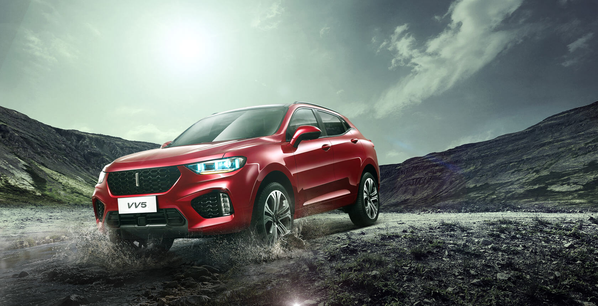
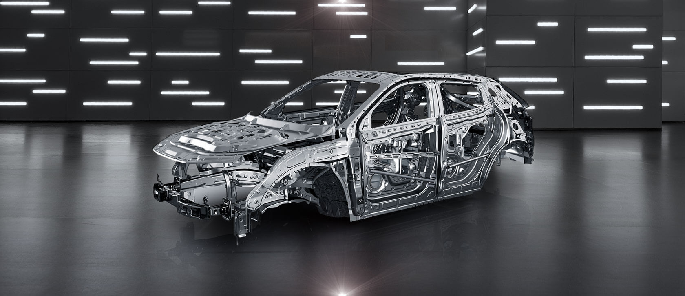
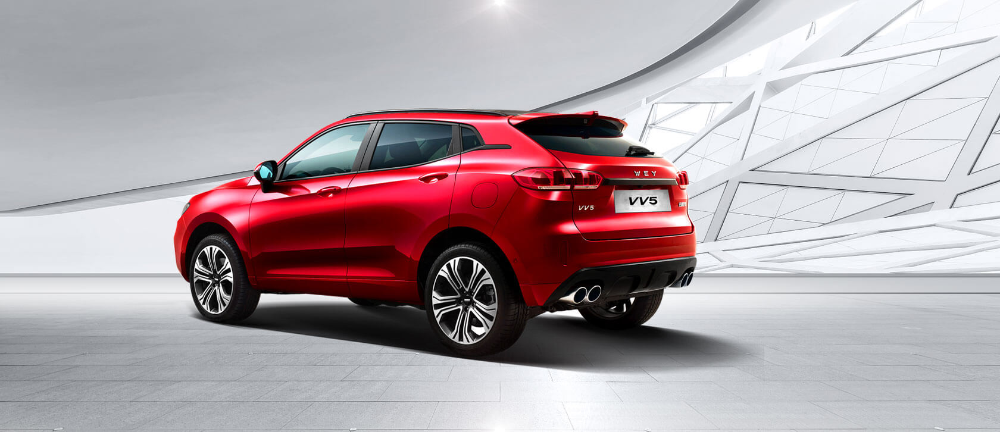
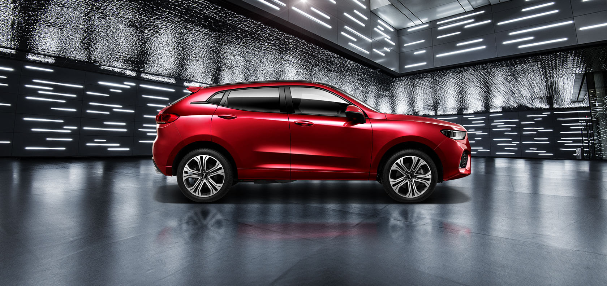

概览
外观
内饰
安全
科技
操控
配置与价格
预约试驾

安 ◆ 享旅程 安全
青春就是一场冒险，面对各种挑战，
你必须勇往直前！准备好了吗？
握紧扶手，体验速度带来的淋漓尽致，
让Collie智慧安全系统守护你的每一次抵达。
安全不止守护 ◆
也是对可能的危险 主动出击
Collie智慧安全系统，以忠实机智的牧羊犬之名，
守护着车辆行人和车内乘员的安全，
您可实时监测车辆状态并协同诸多电子系统及车身组件,
来保障车辆及人员的安全，
让你的旅途时刻与安全相伴

强大 ◆ 是可以经得起 时间考验的力量
VV5车身材料选用宝钢、德国蒂森等世界一流钢厂钢材，配备德国BASF、美国PPG等世界级供应商提供高性能油漆，
经历层层工艺以及苛刻考验，为您打造经得起时间历练的12年无锈穿的安全车身。
用科技 ◆ 守护 生命
对我们来说，生命就是一种信仰，
无论多么豪华的配置，
脱离了安全，都是没有意义的。
VV5系列配备13项高科技主动安全，
从启动汽车的一刻，一切安全就已为你准备到位！

年轻可以偶尔 ◆ 任性 行车需要绝对安全
TPMS智能胎压监测让您实时掌握车胎压力，前后雷达智能识别潜在的碰撞危险，预知让年轻的旅程更加自如；
VV5全系标配6安全气囊，宽广的保护范围将伤害降至最低，年轻需要更多的机会去实现梦想。

行人 ◆ 乘员与车辆 为每个人的安全，全力以赴
我们认为，真正的安全不仅来自车内，全新“3DP” 安全车身设计理念，以乘员、行人、车辆三个维度的保护设计，
铸就旅途中的全方位安全保护。
查找最近经销商
无论你身在何处，通过WEY网络，即可更快更方便地找到您的首选经销商，轻松享受各项专属服务
省/市
浙江省
广东省
福建省
四川省
市/区